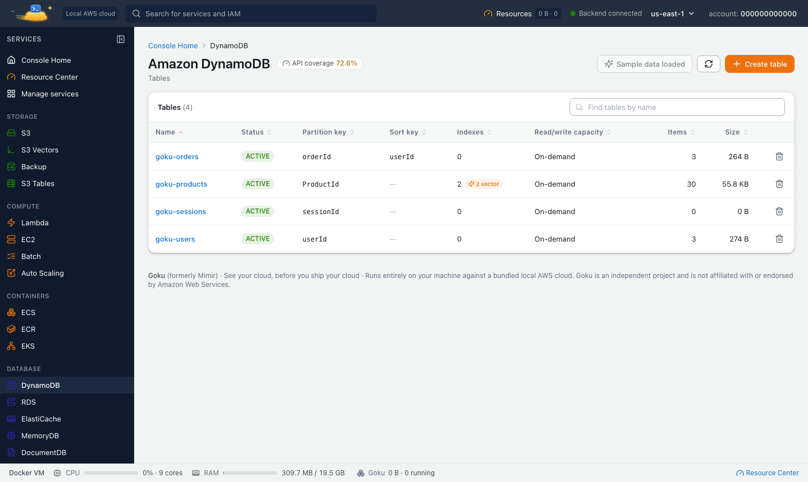

Running DynamoDB locally gives you fast tests, no bill and no shared dev table to trip over. Goku, a free local AWS emulator, serves DynamoDB on http://localhost:4566 with tables, indexes, PartiQL, Streams and vector search, plus a console to look inside your tables. Lambda, S3 and SQS run next to it on the same endpoint.
Goku was formerly called Mimir. Same product, new name: the image is now tanujsoni027/goku (it was tanujsoni027/mimir-aws) and the command is goku. See old and new names.
On this page: Local AWS or one service · Start · Tables and items · Queries and GSIs · PartiQL · Streams and TTL · Vector search · Persistence · FAQ
If DynamoDB is the only AWS service your code touches, a single-service DynamoDB emulator is a reasonable choice. Most applications use DynamoDB together with other services, though. A Lambda function reads the table's stream, a nightly export lands in S3, or a write triggers an SQS message. To test those flows locally, you need the other services running as well.
Goku runs DynamoDB alongside 72 other AWS-compatible services on one endpoint, so the table, the stream consumer and the queue are all on your machine. It also comes with a web console where you can browse items, run PartiQL and search vectors. The AWS CLI and SDK calls are the ones you use against AWS; only the endpoint changes.
Install the goku CLI (see Install), then start Goku and point the AWS CLI at it. DynamoDB is one of the core services, so it is on from the first start:
$ goku start
eval "$(goku env)"
aws dynamodb list-tables
In application code, set the endpoint on the client. With boto3:
import boto3
dynamodb = boto3.client(
"dynamodb",
endpoint_url="http://localhost:4566",
region_name="us-east-1",
aws_access_key_id="test",
aws_secret_access_key="test",
)$ aws dynamodb create-table \
--table-name Users \
--attribute-definitions AttributeName=userId,AttributeType=S \
--key-schema AttributeName=userId,KeyType=HASH \
--billing-mode PAY_PER_REQUEST
aws dynamodb put-item \
--table-name Users \
--item '{"userId":{"S":"u1"},"name":{"S":"Alice"},"age":{"N":"30"}}'
aws dynamodb get-item \
--table-name Users \
--key '{"userId":{"S":"u1"}}'
UpdateItem, DeleteItem, BatchWriteItem, BatchGetItem and the TransactWriteItems / TransactGetItems transactions work too.
Query by partition key, or scan with a filter:
$ aws dynamodb query \
--table-name Users \
--key-condition-expression "userId = :id" \
--expression-attribute-values '{":id":{"S":"u1"}}'
aws dynamodb scan \
--table-name Users \
--filter-expression "age > :min" \
--expression-attribute-values '{":min":{"N":"25"}}'
Create a table with a global secondary index, then query the index:
$ aws dynamodb create-table \
--table-name Orders \
--attribute-definitions \
AttributeName=orderId,AttributeType=S \
AttributeName=customerId,AttributeType=S \
--key-schema AttributeName=orderId,KeyType=HASH \
--global-secondary-indexes '[{
"IndexName": "CustomerIndex",
"KeySchema": [{"AttributeName":"customerId","KeyType":"HASH"}],
"Projection": {"ProjectionType":"ALL"}
}]' \
--billing-mode PAY_PER_REQUEST
aws dynamodb put-item --table-name Orders \
--item '{"orderId":{"S":"o1"},"customerId":{"S":"c1"},"total":{"N":"42"}}'
aws dynamodb query \
--table-name Orders \
--index-name CustomerIndex \
--key-condition-expression "customerId = :c" \
--expression-attribute-values '{":c":{"S":"c1"}}'
As on AWS, Limit caps the items evaluated before a filter is applied, and a scan of an index only visits items that have the index's key attributes. DescribeTable reports item counts and sizes for each GSI and LSI right away, where AWS refreshes them about every six hours.
Goku supports ExecuteStatement, BatchExecuteStatement and ExecuteTransaction, with SELECT, INSERT, UPDATE and DELETE. A SELECT without a partition-key condition runs as a filtered scan.
$ aws dynamodb execute-statement \
--statement "SELECT * FROM Orders WHERE orderId = 'o1'"
aws dynamodb execute-statement \
--statement "INSERT INTO Orders VALUE {'orderId': 'o2', 'customerId': 'c2', 'total': 15}"
The console's DynamoDB page has a PartiQL editor, an item explorer with a JSON editor, and export to JSON or CSV.

Turn on a stream and time to live the way you would on AWS:
$ aws dynamodb update-table \
--table-name Users \
--stream-specification StreamEnabled=true,StreamViewType=NEW_AND_OLD_IMAGES
aws dynamodb update-time-to-live \
--table-name Users \
--time-to-live-specification Enabled=true,AttributeName=expiresAt
A Lambda function can consume the stream through an event source mapping, just as on AWS, so you can test the full write-to-function path on your machine. See testing AWS Lambda locally. Goku also supports on-demand backups, point-in-time recovery, global tables across regions, exports to S3 and imports from S3.
Goku implements DynamoDB vector indexes and the SearchVectors operation with the AWS request and response shapes. This example uses 3-dimensional vectors so you can type them by hand; real embeddings have hundreds or thousands of dimensions (up to 4,096). You need a recent AWS CLI v2 that includes search-vectors.
$ aws dynamodb create-table \
--table-name Products \
--attribute-definitions AttributeName=ProductId,AttributeType=S AttributeName=Category,AttributeType=S \
--key-schema AttributeName=ProductId,KeyType=HASH \
--billing-mode PAY_PER_REQUEST \
--vector-indexes '[{"IndexName":"DescriptionIndex","VectorAttribute":{"AttributeName":"Embedding"},
"SearchSchema":[{"AttributeName":"Category","SearchSchemaElementType":"HASH"}],
"Projection":{"ProjectionType":"ALL"},"Dimensions":3,"DistanceFunction":"COSINE"}]'
aws dynamodb put-item --table-name Products --item '{"ProductId":{"S":"p1"},"Category":{"S":"Kitchen"},
"Embedding":{"L":[{"N":"1"},{"N":"0"},{"N":"0"}]}}'
aws dynamodb search-vectors \
--table-name Products --index-name DescriptionIndex \
--search-vector '[{"N":"0.9"},{"N":"0.1"},{"N":"0"}]' --top-k 5 \
--search-condition-expression "Category = :c" \
--expression-attribute-values '{":c":{"S":"Kitchen"}}'
Where AWS uses approximate nearest-neighbour search, Goku searches every item exactly. Recall is 100% and results are deterministic, which makes assertions in tests stable. COSINE, EUCLIDEAN and DOT_PRODUCT distances are supported. The console's vector search tab searches by text, by an item similar to one you pick, or by a raw vector.
Tables and items live in Goku's data folder, ~/.goku/data on macOS and Linux or %LOCALAPPDATA%\Goku\data on Windows, so they survive goku stop, updates and Docker resets. To reset to a known state before each test run, save a snapshot of just DynamoDB and restore it when you need it:
$ goku snapshot save seeded-tables --services dynamodb
goku snapshot restore seeded-tables
For throwaway runs, such as in CI, start the container with -e GOKU_AUTO_PERSIST=off and nothing is kept.
Yes. Goku is free, needs no AWS account and accepts any local credentials such as test / test.
Tables, items, queries and scans, global and local secondary indexes, transactions, PartiQL, Streams, TTL, backups and point-in-time recovery, global tables, exports to and imports from S3, and vector search.
http://localhost:4566 in region us-east-1. eval "$(goku env)" sets it for the AWS CLI and SDKs in your shell.
Exact. Goku compares the query with every indexed item, so recall is 100% and ties are broken by primary key. AWS uses approximate nearest-neighbour search.
Yes. Tables and items are kept in the data folder on your disk. Environment snapshots can also save and restore them on demand.